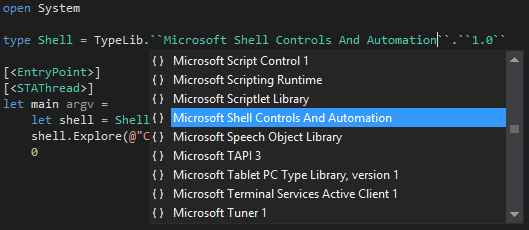

COM Type Provider for F#
The COM Type Provider provides a new way to do COM interop from F#. It allows you to access COM components directly from F# projects and scripts without adding any references other than the type provider itself.
PM> Install-Package FSharp.ComProvider
One advantage of this method is that you can author and deploy F# scripts without having to pre-generate the interop assemblies. Another advantage is that you can easily explore all the COM components installed on your machine via intellisense.
Sample
Here is a simple script that uses COM to launch a Windows Explorer window:
1: 2: 3: 4: 5: 6: |
#r "FSharp.ComProvider.dll" type Shell = TypeLib.``Microsoft Shell Controls And Automation``.``1.0`` let shell = Shell.ShellClass() shell.Explore(@"C:\") |
If you're writing compiling to an assembly, you'll want to include the
STAThread attribute on your entry function for proper COM functionality:
1: 2: 3: 4: 5: 6: |
[<EntryPoint>] [<STAThread>] let main argv = let shell = Shell.ShellClass() shell.Explore(@"C:\") 0 |
Contributing and license
The project is hosted on GitHub where you can report issues, fork the project and submit pull requests. If you're adding new public API, please also consider adding samples that can be turned into a documentation. You might also want to read library design notes to understand how it works.
The library is available under a public domain license, which allows modification and redistribution for both commercial and non-commercial purposes. For more information see the License file in the GitHub repository.
nested type .DShellFolderViewEvents_Event
nested type .DShellFolderViewEvents_EventProvider
nested type DFConstraint
nested type DShellFolderViewEvents
nested type DShellFolderViewEvents_BeginDragEventHandler
nested type DShellFolderViewEvents_DefaultVerbInvokedEventHandler
nested type DShellFolderViewEvents_EnumDoneEventHandler
nested type DShellFolderViewEvents_SelectionChangedEventHandler
nested type DShellFolderViewEvents_SinkHelper
nested type DShellFolderViewEvents_VerbInvokedEventHandler
...
Full name: Index.Shell
Full name: Index.shell
inherit __ComObject
interface IShellDispatch6
interface IShellDispatch5
interface IShellDispatch4
interface IShellDispatch3
interface IShellDispatch2
interface IShellDispatch
interface Shell
new : unit -> ShellClass
member AddToRecent : varFile: obj * ?bstrCategory: string -> unit
...
Full name: Index.Shell.ShellClass
type EntryPointAttribute =
inherit Attribute
new : unit -> EntryPointAttribute
Full name: Microsoft.FSharp.Core.EntryPointAttribute
--------------------
new : unit -> EntryPointAttribute
type STAThreadAttribute =
inherit Attribute
new : unit -> STAThreadAttribute
Full name: System.STAThreadAttribute
--------------------
STAThreadAttribute() : unit
Full name: Index.main